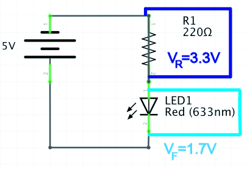

Electricity & Circuits || Components || Schematic Diagrams || Parallel vs. Series Circuits || Ohm's Law || Digital I/O || Analog Input || Datasheets || Analog Output || Programming || Learning p5.js || Serial input to P5.js || Motors || Serial from P5.js to Arduino
Electricity: Electron flow through a conductive material. Electrons will flow through the path of least resistance.
Circuit: When a power source (let's say a battery) is connected to components that turn electrical energy into some other kind of energy.
Load: The component/s that are doing the work on a circuit.
Ground: The place on a circuit with the lowest potential energy. Sometimes this is the actual ground, but other times it is the grounded part of a circuit. In a circuit, electricity flows from the power source to ground.
Short Circuit: When power and ground connect directly to each other without a load or bypassing a load, the power source overheats.
Voltage: A measure of the potential energy difference between two points on a circuit. Units are Volts (V).
Current: A measure of the magnitude of electron flow at a particular point in a circuit. Units are amperes, or, amps.
Resistance: A measure of materials ability to resist the flow of electrons. Units are ohms.
Do not: connect + and - terminals directly to each other (i.e. Short circut).
Do: connect components that use all your voltage (resistors, LEDs, Motors, etc). The voltage requirements of your components should add up to the amount of voltage provided. If your components draw less voltage, they will overheat. If they draw too much voltage, your components might not work (or be dim, slow, etc. depending).
Circuits must be closed in order for electricity to flow.
Switches control the opening and closing of your circuit.
Conductor: Material that allow for free flow of electrons.
Insulator: Material that prevents the flow of electricity.
Resistor: Materials that resists the flow of electricity.
Transducer: A component that converts one kind of energy into another kind of energy. Sensors convert some kind of energy (mechanical, temperature, light, etc.) into electricity, which can be read as a signal. Actuators convert electrical energy into some other energy (heat, light, movement, etc.)
Switch: A conductor that acts as a mechanical connector/disconnector in a circuit.
Diode: Allow electricity to flow in one direction but not another direction. Diodes are one kind of polarized component, which means they can only be connected in a circuit in one direction.
LED: Light Emitting Diodes emit light, and are polarized like all diodes.
Capacitor: Store electrical energy while it's being provided, and then release it when it stops. Decoupling capacitors are capacitors used to to smooth electricity flow in a circuit. Capacitors can be polarized or unpolarized.
Transistor: An electronic switch. Transistors have three terminals: collector, base (responsible for activating flow between the collector and emitter), and emitter (connects to ground); or source (connects to ground), gate (responsible for activating flow between the source and drain), drain (for MOSFETS). They are often used to have a small amount of energy (an electronic signal) control a larger amount of energy.
Potentiometer: A variable resistor.
Wire: A conductive material wrapped in an insulated material used to connect components. They can generally be thought of as having zero resistance.
Solderless breadboard: An resuable prototyping material that allows you to create easy electrical connections.
Battery holder: Connect to the positive and negative poles of a battery for easy connection to your circuit.

Practical Electronics for Inventors p.i
Practical Electronics for Inventors p.2
Schematic diagrams show the electrical relationship of components in a circuit. They do not (generally) show the spatial relationship of components.
Components have corresponding symbols, which is how they are represented in schematics.

Practical Electronics for Inventors p.10
Below is the same schematic drawn differently:

Basic Circuit:

Series Circuit: In a series circuit, energy flows from one component to the next component. Components draw voltage, and the voltage drops. In a simple DC circuit, the sum of the voltage drops across each component must equal the source voltage (Kirchoff's Voltage Law). The amount of current going into any component is the same as the current coming out (Kirchoff's Current Law).
Parallel Circuit: Components are in parellel when energy flows through them at the same time. Voltage across components wired this way is the same, but the current is divided between them.
Combined Series & Parallel Circuit:

Practical Electronics for Inventors p.49-50
"Ohm's Law" refers to the relationship Georg Simon Ohm observed regarding the behavior of materials: that there is a linear relationship between how much current flows through material when a given voltage is applied across it. It is resistance defined in terms of the ratio of applied voltage and resultant current flow:
R = V/I where R is Resistance (Ohms); V is Voltage (Volts); I is Current (Amps)
One ohm is the resistance through which 1 Amp flows when 1 Volt is applied. For circuit analysis you can predict what voltage must exist across a known resistance and measured current using V=IR and similarly predict amperage across a known resistance and measured voltage using I=V/R.(For a given voltage, more resistance means less current.)

Wikipedia
Consider the circuit we built last week in class:
If we measure the voltage drop of the resistor, and know the resistor value in ohms, we can calculate the current running through it.
I=V/R
I=3.3/220Ω
0.015A or 15mA.
If we know the supply voltage, the required forward voltage of our LED, and the desired current for the LED (from the data sheet), we can calculate the ideal resistor value.
I=VS-VF/R
R = 3.3V/0.020A
R = 165Ω
Electricity as power vs. electronics as signal: With some logic, we can use electricity as a signal. For example, we can read a digital input from an Arduino pin as "HIGH" (5V) and do something based on this information, in contrast to when it is 0V ("LOW").
Arduino pins also allow us to "write" or output binary values of 5V or 0V. Think back to when we used the 5 volt output as a power source for an LED. All of the digital pins can do the same thing--the difference is you can control this with code: you can tell the Arduino to supply 5V or 0V to a particular pin.
The digital pins (on the Arduino Uno these are: 0-13) on an Arduino can input and output digital information via the digitalRead() and digitalWrite() commands, respectively.
Digital inputs are binary, which means they only have two states. Analog inputs can have a range of values.
When we configure Arduino pins as inputs, it is important to use a pulldown (connected to ground) or pullup (connected to V+) resistor. This does a few things: (1) It protects your circuit from a short; (2) It prevents a "floating ground", which is when there is no electrical connection to ground; (3) It creates a path of resistance when the circuit is closed, so the arduino can read the voltage.
Arduino: A microcontroller development board: The microcontroller we are using with an Arduino development board is a Atmel Atmega328P chip. Compared with other computers that can run whole operating systems, microcontroller are firmware-only processors. No processor can run by itself: it needs components like a voltage regulator and external clock to keep time. The Arduino board provides all the components you need in order to easily connect input and outputs. It runs just one program which you can easily change using the Arduino development environment.
In order to see the values you're receiving with Arduino, use the Serial Monitor. In addition to introduce the serial monitor, the link shows how to include Serial.begin in your setup() function and Serial.println() in your loop in order to print digital values.
Pinout diagrams from: Introduction to Arduino
ITP Lab: Microcontrollers: The Basics
Arduino Reference: Digital Pins
Digital Read Serial Arduino reference --note this is also available under File>Examples>01.Basics in your Arduino IDE.
The Arduino's Analog pins (on the Arduino Uno, these are A0-A5) allow us to input or "read" a range of values from 0-1023 via the analogRead() command.
You cannot use the analog pins to output analog signals.
Similarly to a digital input circuit where you are trying to read the value of a switch or button (which requires a pullup or pulldown resistor), most analog sensors (resistive sensors/variable resistors) require a resistor divider in series with the sensor, where the measurement point is between the resistors. Some sensors already have circuitry (they may even include an integrated circuit) built in that means their wiring is an exception to this. You must check the data sheets for your sensors.
A potentiometer is an exception, as a variable resistor that works with an internal wiper, it doesn't require an additional resistor because one leg acts as that resistor.

Above is an example wiring for a photocell, a sensor that requires a resistor divider in order to have a value read by the Arduino (from the Arduino reference site).
Above is an example of a proximity sensor with just 3 pinouts: Vcc (Voltage input/the supply voltage), Vo (Voltage output--this is the output you read from your Arduino), and Gnd (Ground).
Above is the block diagram of the proximity sensor datasheet showing pinouts.
Just as with digitalRead(), in order to see the values you are receiving in your Serial Monitor with Arduino, you must use the Serial.begin() command in your setup() function, and Serial.println() to print the value.
Above you'll find the class example where we used variables for the analog input and digital input values. You may also recall we could create variables to hold the values of the Arduino pins we were using. This way, they are held in memory with a descriptive name, and we can easily update them and/or use them repeatedly in our code. Remember that we also used Serial.begin(9600) where 9600 was the baud rate, and were then able to print out the analog and digital values to the console. The console is available through the top right corner of the IDE (the icon looks kind of like a magnifying glass).
ITP: Analog In with an Arduino Lab
Analog Read Serial Arduino reference--note this also avaiable under File>Examples>01.Basics in your Arduino IDE.
Datasheets are technical documentation that include important information about how to operate a component. There are actually datasheets for every component we've looked at and worked with in this class. They will usually at minimum include:
a summary of the component/sensor and its operation;
a pin diagram;
a table of electrical characteristics: supply voltage, the operating current, expected output;
Be careful to stay within the sensors operating voltage and current needs. Remember excess current turns into heat--this could damage your sensor or change the operating characteristics.
Remember that the analog input pins on an Arduino only read analog values. As a digital device, Arduino actually can't output an analog signal, it can only simulate an analog signal on the Digital PWM ~ pins (on an Arduino Uno these are: 3, 5, 6, 9, 10, 11). You can distinguish them with the ~ next to them.
PWM stands for "pulse width modulation", a technique where the digital signal modulates from on (5V) to off (0V) very quickly. Imagine a very short period of time (let's say 2 milliseconds) where 5V is supplied 25% of the time, and 0V is suppled for 75% of the time. The resulting voltage would be 1/4 of 5V, 1.25V. The period of time where the signal is "on" (5V) is the "pulse." The proportion of the time refers to the "width." The total on-off measurement period (100%, in our example, 2 milliseconds) is called the "duty cycle."
Analog Output values written with the analogWrite() function in Arduino can be output on a scale of 0-255, such that 255 requests 100% of the duty cycle. In our example above, requesting 25% of the duty cycle would be analogWrite(64). 50% of the duty cycle would be analogWrite(127), and so on.
You can use the analog output functionality to fade an LED, operate a motor, a fan, etc.

Diagram of square waves showing duty cycles from 0%-100%, from the Arduino PWM Tutorial (linked below).
ITP Video: Analog Output (including PWM on an oscilloscope)
We have been practicing programming concepts in Arduino that are transferrable to any programming language, while other languages might have slightly different syntax and work a bit differently.
While Arduino is a programming language built for physical computing and working with microcontrollers, P5.js is a language built for creative coding on the web: visuals, sound, and other media. It's an Free and Open Source Software (FLOSS) that has ported all the functionality from the Processing language to Javascript.
Below you can see some similarities in the basic program structure between Arduino and P5.js

Variable: A place in a computer's memory that stores a value and can be referred to by a name. In order to create and use your own variable you must declare and initialize it. If a language is "strictly typed" that means you must identify what kind of data will be stored in that variable. Arduino is a strictly typed language but P5.js is not. With Arduino for example, we used "int" to say we were creating an integer variable. In P5, we use "let" and javascript figures out the data type when we initialize the variable. Initializing is when we give the variable its first value (=2; *or* ="A string of text"; etc). Variables like LED_BUILTIN or displayHeight are system variables available in the language that you do not have to declare and initialize.
Function: A piece of code that does something. Like variables, programming languages come with functions but you can also define your own. Some functions we've used are digitalWrite() or ellipse(). Not all functions require you to pass through values, but when they do these values are referred to as arguments. We can't just call digitalWrite, for example, we call digitalWrite(2, HIGH); where 2 and HIGH are the arguments.
Operators: The symbols in programming languages that allow us to change and compare numbers. Relational operators like < "less than" or > "greater than" or == "equals" or != "not equals" allow us to compare values. Logical operators like && "and" and || "or" allow us to make composite expressions. Mathematical operators are the operators you're used to from arithmetic that allow you to add, substract, divide, find the remainder from division, multiply, etc. Like for any system variables or available functions, the best place to check these for the given language you're working with is in its reference.
There are a number of online resources for learning P5.js. We'll aggregate the notes and references from class here.
Make: Getting Started with p5.js: Making Interactive Graphics in JavaScript and Processing, by Lauren McCarthy, Casey Reas & Ben Fry
P5 tutorials, in particular the "Programming Topics" section
Programming Design Systems by Rune Madsen, Color chapters: A short history of color theory, Color models and color spaces, Perceptually uniform color spaces, Color schemes
The Coding Train tutorials by Daniel Shiffman
Class Example: First line & reset
Upload a sketch to an arduino that uses the println command to print values from a sensor to the serial monitor. This is the same process as when we uploaded sketches to digitalRead or analogRead a button or analog sensor, respectively. You can use the DigitalReadSerial and AnalogReadSerial arduino example code (under File > Examples > Basics). You should check the values you are receiving and do any troubleshooting of your circuit at this step.
When you are confident in your circuit and the data you are printing from the arduino, close the arduino serial monitor and open the p5.serialcontrol application. (If you don't have this application, you can download the most recent release from github.)
Important Warnings: Note that you can only have one application connected to your serial port at a time, which is why these instructions include closing the Arduino serial monitor before using the p5.serialcontrol applications. Sometimes errors are caused by multiple applications trying to access the serial port. Some browsers also treat access to serial ports differently. I have noticed accessing serial ports with P5 and the web editor does not work in Firefox, for example.
In the P5.serialcontrol application, you can press "list ports" to see which port your arduino is connected to. If you haven't switched ports since you uploaded your code, this should be the same port. Select the port your arduino is conencted to by using the drop down menu under "Selected port." Press open. If you choose to enable the serial console, you will see unexpected results, because this monitor is expecting an ascii-encoded string. Don't worry about this! We will convert it to the correct number in P5.
In order for P5 to access data from your serial port, you need to use the p5.serialport library. The library must be included as an additional file in the folder where your sketch is located. You can find code examples at the linked github and from class that show what this looks like.
The sample code includes a number of p5.serialport functions that check for data from the indicated port, print possible errors, and handles incoming data. It's okay if these are not 100% clear yet. The unfamiliar syntax here is called a "callback function," where a function is passed as a parameter to another function. The main pieces of code you should look at to use the data sent from arduino are: serial.open(), where you must update the serial port based on which usb port you plugged your arduino in, the gotData() function, and the draw() function.
The last step is to use the data in a function to do something on your screen! Remember that you are passing data as a string: characters, not numbers. If you want to do math with this data, use the parseInt function (see class example below).
Troubleshooting: Make sure you are using a compatible browser. Chrome seemed to be working for me. If you lose access to your port or start seein NaN (not a number) in your P5 console, try: opening and closing your serial port on the p5.serialcontrol application & restarting P5 or, unplugging and re-plugging your arduino, re-setting the p5.serialcontrol application, & restarting your P5 sketch.
ITP Lab: Serial Communication: Note that we practiced writing and reading String data.
P5 Class example: Necker cube function
P5 Class example: converting string data to integer data with parseInt()
Torque: A measure of a motor's ability to move weight, or "movement force." Torque is included on motors' datasheets in units like mass/"something."
Speed: A measure of how quickly a motor spins, in "rotations per minute" (rpm).
Motors will often work within 40-50% of needed. This is useful for testing.
Motors will draw more current when they start, to overcome intertia.
Anytime you power something that requires more voltage than the arduino supplies, you need a transistor.
Motors are designed for continuous motion with little feedback in terms of where you've turned a motor to, or how much. If you want to control things like speed and direction, you should use a motor driver like an H-Bridge or EZDriver.
Servo motors do provide feedback about rotation and angle. For other motors, you can get this feedback with a sensor.
You can find good junk motors in things like tape decks, CD players, record players, blenders, drills--lots of appliances have motors!
Making Things Move a book & and a blog.
Servo motor angle based on analog sensor: Arduino code
Servo motor angle changing direction with a variable: Arduino code
DC motor: Arduino code
We have been sending serial from Arduino to P5.js. When we have done this in the past, we have sent just one sensor's value. The first two examples below show how we would send values from multiple sensors using a more complex data type: arrays.
The next two examples show how to use the P5 serial library method serial.write() to send data from P5.js to Arduino. In Arduino, these values can be used to affect some actuator, like a motor, or lights.
Read 2 Analog Values: P5 Code, Arduino code
Read 2 Analog Values with averaging: P5 Code, Arduino code (same as previous)
P5 to Arduino (LED Fade): P5 code, Arduino code
P5 to Arduino (servo angle): P5 code, Arduino code
Electricity & Circuits || Components || Schematic Diagrams || Parallel vs. Series Circuits || Ohm's Law || Digital I/O || Analog Input || Datasheets || Analog Output || Programming || Learning p5.js || Serial input to P5.js || Motors || Serial from P5.js to Arduino